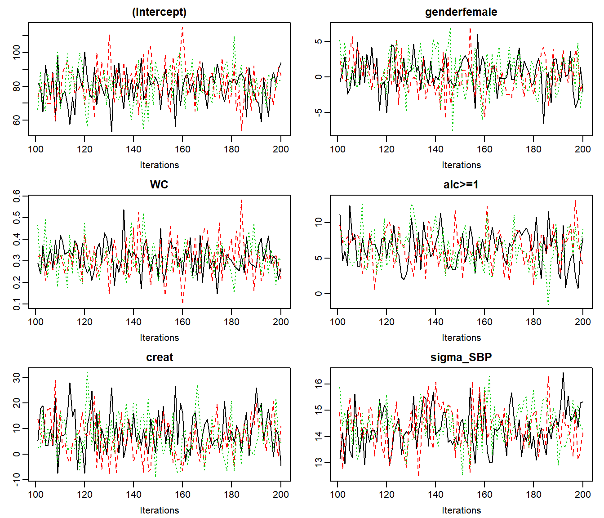
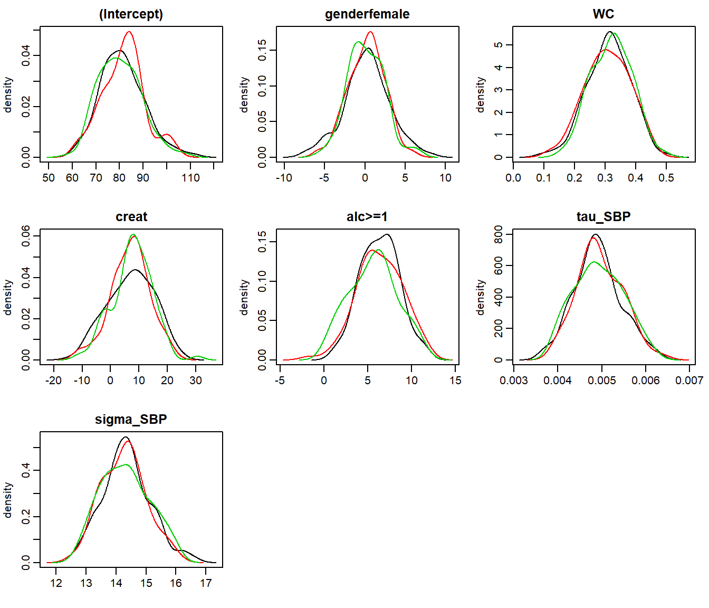
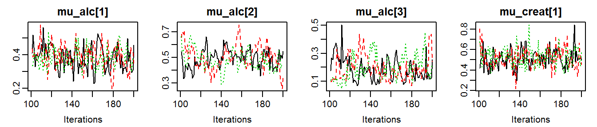
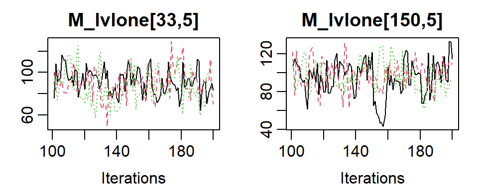
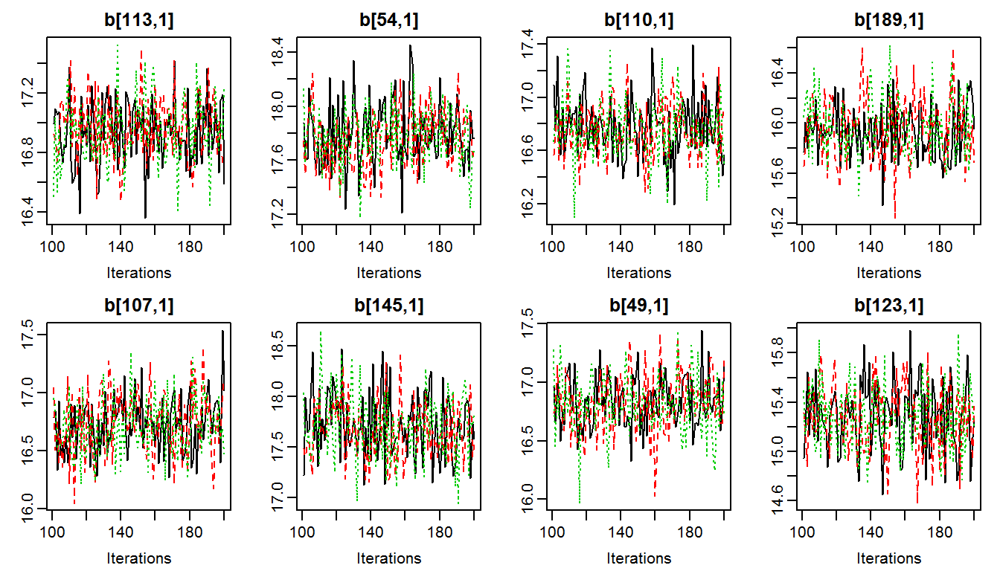
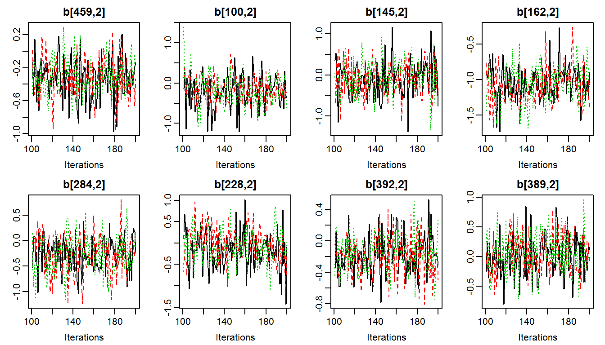

vignettes/SelectingParameters.Rmd
SelectingParameters.RmdIn this vignette, we use the NHANES data for examples in cross-sectional data and the dataset simLong for examples in longitudinal data. For more info on these datasets, check out the vignette Visualizing Incomplete Data, in which the distribution of variables and missing values in both sets is explored.
Note:
In many of the examples we use n.adapt = 0 (and n.iter = 0, which is the default) in order to prevent the MCMC sampling to reduce computational some time. mess = FALSE is used to suppress messages that are not of interest in this vignette. progress.bar = 'none' prevents printing of the progress of the MCMC sampling, which results in lengthy output in the vignette, but is useful in practice.
JointAI uses JAGS for performing the MCMC (Markov Chain Monte Carlo) sampling. Since JAGS only saves the values of MCMC chains for those parameters/variables for which the user has specified that they should be monitored, this is also the case in JointAI.
For this purpose, lm_imp(), glm_imp(), lme_imp(), glme_imp() and survreg_imp() have an argument monitor_params.
monitor_params takes a named list (often a named vector also works) with the following possible entries:
| name/key word | what is monitored |
|---|---|
analysis_main |
betas, tau_y and sigma_y
|
analysis_random |
ranef, D, invD, RinvD
|
imp_pars |
alphas, tau_imp, gamma_imp, delta_imp
|
imps |
imputed values |
betas |
regression coefficients of the analysis model |
tau_y |
precision of the residuals from the analysis model |
sigma_y |
standard deviation of the residuals from the analysis model |
ranef |
random effects |
D |
covariance matrix of the random effects |
invD |
inverse of D
|
RinvD |
scale matrix in Wishart prior for invD
|
alphas |
regression coefficients in the imputation models |
tau_imp |
precision parameters of the residuals from imputation models |
gamma_imp |
intercepts in ordinal imputation models |
delta_imp |
increments of ordinal intercepts |
other |
additional parameters |
Each of the key words works as a switch.
The default setting is monitor_params = c(analysis_main = TRUE), i.e., only the main parameters of the analysis model are monitored, and monitoring is switched off for all other parameters.
The main parameters are the regression coefficients of the analysis model (beta) and the residual standard deviation (sigma_y, and precision tau_y).
The function parameters() returns the parameters that are specified to be followed (even for models where no MCMC sampling was performed, i.e. when n.iter = 0 and n.adapt = 0).
For example:
To generate (multiple) imputed datasets that can be used for further analyses, the imputed values need to be monitored. This can be done by setting monitor_params = c(imps = TRUE).
lm2 <- lm_imp(SBP ~ age + WC + alc + smoke + occup,
data = NHANES, n.adapt = 0, mess = FALSE,
monitor_params = c(imps = TRUE, analysis_main = FALSE)
)
parameters(lm2, mess = FALSE)
#> [1] "Xc[33,3]" "Xc[150,3]" "Xc[1,8]" "Xc[7,8]" "Xc[8,8]"
#> [6] "Xc[12,8]" "Xc[13,8]" "Xc[21,8]" "Xc[22,8]" "Xc[31,8]"
#> [11] "Xc[33,8]" "Xc[34,8]" "Xc[39,8]" "Xc[49,8]" "Xc[66,8]"
#> [16] "Xc[67,8]" "Xc[80,8]" "Xc[86,8]" "Xc[91,8]" "Xc[92,8]"
#> [21] "Xc[105,8]" "Xc[111,8]" "Xc[115,8]" "Xc[118,8]" "Xc[120,8]"
#> [26] "Xc[127,8]" "Xc[132,8]" "Xc[139,8]" "Xc[146,8]" "Xc[149,8]"
#> [31] "Xc[152,8]" "Xc[163,8]" "Xc[165,8]" "Xc[169,8]" "Xc[180,8]"
#> [36] "Xc[185,8]" "Xcat[6,1]" "Xcat[16,1]" "Xcat[24,1]" "Xcat[27,1]"
#> [41] "Xcat[45,1]" "Xcat[57,1]" "Xcat[58,1]" "Xcat[60,1]" "Xcat[61,1]"
#> [46] "Xcat[65,1]" "Xcat[66,1]" "Xcat[70,1]" "Xcat[80,1]" "Xcat[81,1]"
#> [51] "Xcat[85,1]" "Xcat[88,1]" "Xcat[89,1]" "Xcat[90,1]" "Xcat[101,1]"
#> [56] "Xcat[104,1]" "Xcat[116,1]" "Xcat[133,1]" "Xcat[137,1]" "Xcat[143,1]"
#> [61] "Xcat[168,1]" "Xcat[170,1]" "Xcat[180,1]" "Xcat[186,1]" "Xcat[16,2]"
#> [66] "Xcat[99,2]" "Xcat[123,2]" "Xcat[156,2]" "Xcat[158,2]" "Xcat[166,2]"
#> [71] "Xcat[172,2]"JointAI uses a number of different design matrices to store different types of variables. The matrix Xc is the design matrix of cross-sectional covariates. For categorical incomplete variables (with more than 2 categories) the original variable is stored in the matrix Xcat and Xc contains the corresponding dummy coded variables. Hence, the imputed values of continuous and binary variables are elements of Xc and imputed values of categorical variables are elements of Xcat.
The parameters of the models for the incomplete variables can be selected with monitor_params = c(imp_pars = TRUE). This will set monitors for the regression coefficients (alpha) and other parameters, such as precision (tau_*) and intercepts & increments (gamma_* and delta_*) in cumulative logit models.
lm3 <- lm_imp(SBP ~ age + WC + alc + smoke + occup,
data = NHANES, n.adapt = 0, mess = FALSE,
monitor_params = c(imp_pars = TRUE, analysis_main = FALSE),
)
parameters(lm3, mess = FALSE)
#> [1] "alpha" "tau_WC" "gamma_smoke" "delta_smoke"An overview of the imputation models used, including the names of the parameters and the hyperparameters can be obtained with
list_impmodels(lm2)
#> Normal imputation model for 'WC'
#> * Predictor variables:
#> (Intercept), age
#> * Regression coefficients:
#> alpha[1:2] (normal prior(s) with mean 0 and precision 1e-04)
#> * Pecision of 'WC':
#> tau_WC (Gamma prior with scale parameter 0.01 and rate parameter 0.01)
#>
#> Cumulative logit imputation model for 'smoke'
#> * Reference category: 'never'
#> * Predictor variables:
#> age, WC
#> * Regression coefficients (without intercept):
#> alpha[3:4] (normal prior(s) with mean 0 and precision 0.001)
#> * Intercepts:
#> - never: gamma_smoke[1] (normal prior with mean 0 and precision 0.001)
#> - former: gamma_smoke[2] = gamma_smoke[1] + exp(delta_smoke[1])
#> * Increments:
#> delta_smoke[1] (normal prior(s) with mean 0 and precision 0.001)
#>
#> Multinomial logit imputation model for 'occup'
#> * Reference category: 'working'
#> * Predictor variables:
#> (Intercept), age, WC, smokeformer, smokecurrent
#> * Regression coefficients:
#> - 'occuplooking for work': alpha[5:9] (normal prior(s) with mean 0 and precision 0.001)
#> - 'occupnot working': alpha[10:14] (normal prior(s) with mean 0 and precision 0.001)
#>
#> Logistic imputation model for 'alc'
#> * Reference category: '<1'
#> * Predictor variables:
#> (Intercept), age, WC, smokeformer, smokecurrent, occuplooking for work, occupnot working
#> * Regression coefficients:
#> alpha[15:21] (normal prior(s) with mean 0 and precision 0.001)Imputed datasets can be extracted and exported with the function get_MIdat(). A completed dataset is created by taking the imputed values from a randomly chosen iteration of the MCMC sample (transforming them back to the original scale, if scaling had been performed during the MCMC sampling) and filling them into the original, incomplete data.
get_MIdat() returns a long-format data.frame containing the imputed datasets (and possibly the original data) stacked onto each other. The imputation number is given in the variable Imputation_, column .id contains a newly created id variable for each observation in cross-sectional data (multi-level data should already contain an id variable).
get_MIdat() takes the arguments:
| argument | explanation |
|---|---|
object |
a JointAI object |
m |
number of datasets to be created |
include |
logical; should the original data be included? |
start |
the first iteration that may be randomly chosen (i.e., all previous iterations are discarded as burn-in) |
minspace |
minimum number of iterations between iterations chosen as imputed values |
seed |
optional seed value in order to make the random selection |
| of iterations reproducible | |
export_to_SPSS |
logical; should the datasets be exported to SPSS, i.e., written as .txt and .sps file? If export_to_SPSS = FALSE (default) the imputed data is only returned data.frame
|
resdir |
directory the files are exported to |
filename |
the name of the .txt and .sps files |
For mixed models, analysis_main also includes the random effects covariance matrix D:
lme1 <- lme_imp(bmi ~ age + EDUC, random = ~age | ID,
data = simLong, n.adapt = 0, mess = FALSE)
parameters(lme1, mess = FALSE)
#> [1] "(Intercept)" "EDUCmid" "EDUClow" "age" "sigma_bmi"
#> [6] "D[1,1]" "D[1,2]" "D[2,2]"Setting analysis_random = TRUE will switch on monitoring for the random effects (ranef), random effects covariance matrix (D), inverse of the random effects covariance matrix (invD) and the diagonal of the scale matrix of the Wishart-prior of invD (RinvD).
lme2 <- lme_imp(bmi ~ age + EDUC, random = ~age | ID,
data = simLong, n.adapt = 0, mess = FALSE,
monitor_params = c(analysis_random = TRUE))
parameters(lme2, mess = FALSE)
#> [1] "(Intercept)" "EDUCmid" "EDUClow" "age" "sigma_bmi"
#> [6] "b" "invD[1,1]" "invD[1,2]" "invD[2,2]" "D[1,1]"
#> [11] "D[1,2]" "D[2,2]" "RinvD[1,1]" "RinvD[2,2]"It is possible to select only a subset of the random effects parameters by specifying them directly, e.g.
lme3a <- lme_imp(bmi ~ age + EDUC, random = ~age | ID,
data = simLong, n.adapt = 0, mess = FALSE,
monitor_params = c(analysis_main = TRUE, RinvD = TRUE))
parameters(lme3a, mess = FALSE)
#> [1] "(Intercept)" "EDUCmid" "EDUClow" "age" "sigma_bmi"
#> [6] "D[1,1]" "D[1,2]" "D[2,2]" "RinvD[1,1]" "RinvD[2,2]"or by switching unwanted parts of analysis_random off, e.g.
lme3b <- lme_imp(bmi ~ age + EDUC, random = ~age | ID,
data = simLong, n.adapt = 0, mess = FALSE,
monitor_params = c(analysis_main = TRUE,
analysis_random = TRUE,
RinvD = FALSE,
ranef = FALSE))
parameters(lme3b, mess = FALSE)
#> [1] "(Intercept)" "EDUCmid" "EDUClow" "age" "sigma_bmi"
#> [6] "invD[1,1]" "invD[1,2]" "invD[2,2]" "D[1,1]" "D[1,2]"
#> [11] "D[2,2]"The element other in monitor_params allows to specify one or multiple parameters additional parameters to be monitored. When other is used with more than one element, monitor_params has to be a list.
Here, we monitor the probability to be in the alc>=1 group for subjects 1 through 3 and the expected value of the distribution of creat for the first subject.
The functions summary(), traceplot(), densplot(), GR_crit() and MC_error() all have an argument subset. This argument allows to select a subset of parameters to be shown in the output. Especially when not only the parameters of the main analysis model are followed, but also, for example, imputed values, looking at a subset may be desirable.
subset follows the same logic as monitor_params described above.
By default, only the parameters of the main analysis model are displayed if they were monitored:
# Run a model monitoring analysis parameters and imputation parameters
lm5 <- lm_imp(SBP ~ gender + WC + alc + creat,
data = NHANES, n.iter = 100, mess = FALSE, progress.bar = 'none',
monitor_params = c(imp_pars = TRUE))
# model summary
summary(lm5)
#>
#> Linear model fitted with JointAI
#>
#> Call:
#> lm_imp(formula = SBP ~ gender + WC + alc + creat, data = NHANES,
#> n.iter = 100, monitor_params = c(imp_pars = TRUE), progress.bar = "none",
#> mess = FALSE)
#>
#> Posterior summary:
#> Mean SD 2.5% 97.5% tail-prob. GR-crit
#> (Intercept) 81.859 10.4860 60.923 102.662 0.0000 1.01
#> genderfemale 0.229 2.5529 -4.727 5.223 0.8733 1.00
#> WC 0.307 0.0821 0.144 0.461 0.0000 1.00
#> creat 6.863 7.8722 -8.479 22.854 0.3733 1.04
#> alc>=1 6.220 2.2881 1.933 10.786 0.0133 1.01
#>
#> Posterior summary of residual std. deviation:
#> Mean SD 2.5% 97.5% GR-crit
#> sigma_SBP 14.3 0.708 13.1 15.9 1.04
#>
#>
#> MCMC settings:
#> Iterations = 101:200
#> Sample size per chain = 100
#> Thinning interval = 1
#> Number of chains = 3
#>
#> Number of observations: 186
# traceplot of the MCMC sample
traceplot(lm5)

# Gelman-Rubin criterion
GR_crit(lm5)
#> Potential scale reduction factors:
#>
#> Point est. Upper C.I.
#> (Intercept) 1.002 1.01
#> genderfemale 0.999 1.00
#> WC 1.000 1.00
#> creat 1.007 1.04
#> alc>=1 1.010 1.01
#> sigma_SBP 1.009 1.04
#>
#> Multivariate psrf
#>
#> 1.01
# Monte Carlo Error of the MCMC sample
MC_error(lm5)
#> est MCSE SD MCSE/SD
#> (Intercept) 46.043 3.59394 46.0449 0.078
#> genderfemale 0.229 0.13110 2.5529 0.051
#> WC 0.021 0.00028 0.0056 0.049
#> creat 40.088 3.39171 45.9834 0.074
#> alc>=1 6.220 0.16404 2.2881 0.072
#> sigma_SBP 14.344 0.04362 0.7083 0.062When analysis_main was not switched on, all parameters are displayed by default:
# Re-run the model from above, now creating MCMC samples
lm4 <- lm_imp(SBP ~ gender + WC + alc + creat,
data = NHANES, n.iter = 100, mess = FALSE, progress.bar = 'none',
monitor_params = list(analysis_main = FALSE,
other = c('p_alc[1:3]', "mu_creat[1]")))
traceplot(lm4, ncol = 4)
To display other parts of the MCMC sample, subset needs to be specified:
# we use lm5 from above
GR_crit(lm5, subset = c(analysis_main = FALSE, imp_pars = TRUE))
#> Potential scale reduction factors:
#>
#> Point est. Upper C.I.
#> alpha[1] 1.019 1.06
#> alpha[2] 1.014 1.06
#> alpha[3] 1.022 1.05
#> alpha[4] 1.035 1.11
#> alpha[5] 0.999 1.00
#> alpha[6] 1.017 1.06
#> alpha[7] 1.044 1.14
#> alpha[8] 1.010 1.05
#> alpha[9] 1.036 1.11
#> tau_WC 1.006 1.03
#> tau_creat 1.015 1.05
#>
#> Multivariate psrf
#>
#> 1.06To select only some of the parameters, they can be specified directly by name via the other element of subset:
summary(lm5, subset = list(other = c('creat', 'alc>=1')))
#>
#> Linear model fitted with JointAI
#>
#> Call:
#> lm_imp(formula = SBP ~ gender + WC + alc + creat, data = NHANES,
#> n.iter = 100, monitor_params = c(imp_pars = TRUE), progress.bar = "none",
#> mess = FALSE)
#>
#> Posterior summary:
#> Mean SD 2.5% 97.5% tail-prob. GR-crit
#> creat 6.86 7.87 -8.48 22.9 0.3733 1.04
#> alc>=1 6.22 2.29 1.93 10.8 0.0133 1.01
#>
#>
#> MCMC settings:
#> Iterations = 101:200
#> Sample size per chain = 100
#> Thinning interval = 1
#> Number of chains = 3
#>
#> Number of observations: 186This also works when a subset of the imputed values should be displayed:
# Re-run the model from above, now creating MCMC samples
lm2 <- lm_imp(SBP ~ age + WC + alc + smoke + occup,
data = NHANES, n.iter = 100, mess = FALSE, progress.bar = 'none',
monitor_params = c(imps = TRUE, analysis_main = FALSE),
)
# select only imputed values for 'WC' (3rd column of Xc)
sub3 <- grep('Xc\\[[[:digit:]]+,3\\]', parameters(lm2), value = TRUE)
sub3
#> [1] "Xc[33,3]" "Xc[150,3]"
traceplot(lm2, subset = list(other = sub3), ncol = 2)
When the number of imputed values is larger, or in order to check convergence of random effects, it may not be feasible to plot all traceplots. In that case, a random subset of, for instance the random effects, can be selected:
lme4 <- lme_imp(bmi ~ age + EDUC, random = ~age|ID,
data = simLong, n.iter = 100, mess = FALSE, progress.bar = 'none',
monitor_params = c(analysis_main = FALSE, ranef = TRUE))
# exract random intercepts
ri <- grep('^b\\[[[:digit:]]+,1\\]$', colnames(lme4$MCMC[[1]]), value = T)
# extract random slopes
rs <- grep('^b\\[[[:digit:]]+,2\\]$', colnames(lme4$MCMC[[1]]), value = T)
# plot the chains of 8 randomly selected random intercepts
traceplot(lme4, subset = list(other = sample(ri, size = 8)), ncol = 4)
# plot the chains of 8 randomly selected random slopes
traceplot(lme4, subset = list(other = sample(rs, size = 8)), ncol = 4)